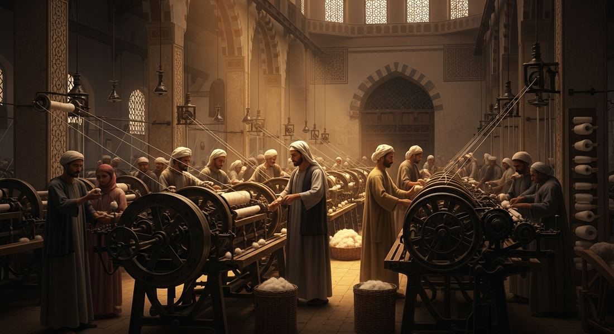
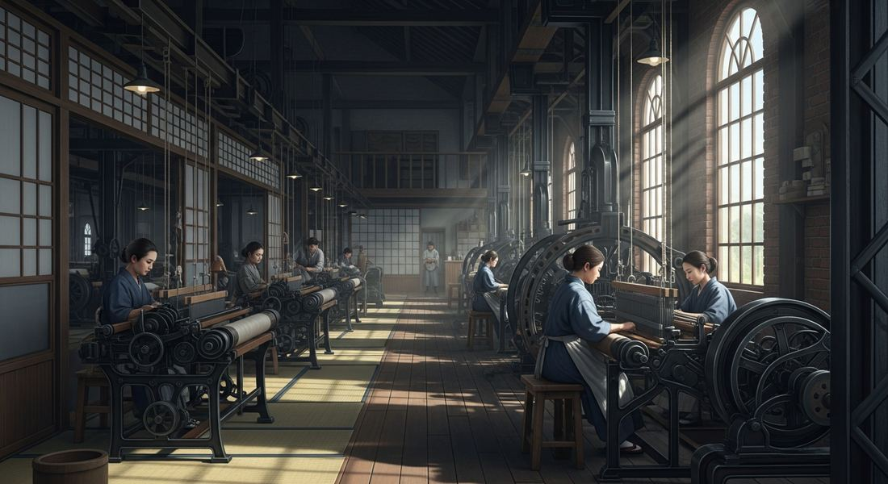

5.6 Industrialization: Government's Role, 1750–1900
- LO-A: Japan's Meiji Restoration (key case): In 1853–1854, American naval commander Matthew Perry forced Japan to open its ports to trade, demonstrating that Japan's traditional military was no match for Western industrial power. The Meiji government that took power in 1868 responded by deliberately adopting Western industrial and military technology, sending students to study in Europe and America, hiring foreign technical experts, building government model factories (and then selling them to private investors), constructing a national railroad network, and reorganizing the military on Western lines. By 1905, Japan defeated Russia in war, the first non-Western country to defeat a major European power in the industrial era, demonstrating the success of state-led industrialization. Britain industrialized primarily through private enterprise. But most later industrializers used significant government direction because they lacked the private capital accumulation and entrepreneurial networks Britain had developed over centuries. The CED requires knowledge of three cases: (1) Muhammad Ali's Egypt, government-built cotton textile industry in the 1820s–1840s, ultimately unsuccessful against British competition; (2) Meiji Japan, after 1868, the government built model factories, sent students abroad, hired foreign experts, and constructed railroads and shipyards; (3) implied: Russia under Finance Minister Witte in the 1890s, massive state investment in the Trans-Siberian Railroad and industrial development. Muhammad Ali's Egypt (illustrative example): Muhammad Ali became ruler of Egypt (nominally under Ottoman authority) in 1805 and pursued an ambitious modernization program, including establishing government-owned cotton textile mills using European machinery and expertise. His goal was to break Egypt's dependence on European finished goods. Initially promising, the program was undermined by the Anglo-Ottoman Commercial Convention of 1838, which opened Egypt to cheap British goods without tariff protection. Unable to compete, the Egyptian textile industry collapsed. This is a cautionary example of state-sponsored industrialization that failed due to political constraints on trade policy.
Try each question before revealing the answer.
1. Britain industrialized primarily through private enterprise. Why would later industrializing countries (Japan, Russia, Egypt) need to use government direction instead?
2. When American warships appeared in Tokyo Bay in 1853 and forced Japan to open its ports, how would this event have appeared to Japanese leaders, and what would it suggest about what Japan needed to do?
3. Muhammad Ali's Egypt tried to industrialize its cotton textile industry in the 1820s–1840s, but the program ultimately failed. What do you think might cause a government industrialization program to fail even if it starts well?
4. Japan's Meiji government built factories and then sold them to private investors rather than keeping them as permanent government enterprises. What is the logic of this "model factory" strategy?
5. Japan defeated Russia in the Russo-Japanese War of 1905. What does this military outcome reveal about the success of Japan's industrialization program?
- Explain the causes and effects of economic strategies of different states and empires.
Tap a term for its definition.
-
Definition: Government-directed and financed industrial development, in which the state plays an active role in building factories, infrastructure, and industries rather than leaving development to private investors. Significance: The characteristic model of late industrializers (Japan, Russia, Egypt) who needed to catch up quickly and lacked the private capital base that Britain had built over decades.
-
Definition: Ottoman viceroy (ruler) of Egypt from 1805 to 1848 who pursued ambitious military and economic modernization, including establishing government-owned cotton textile factories. Significance: The CED's required illustrative example of state-sponsored industrialization, his program partially succeeded but ultimately failed when the 1838 commercial treaty with Britain removed Egypt's ability to protect its industries with tariffs.
-
Definition: The overthrow of Japan's Tokugawa shogunate and restoration of imperial rule in 1868, followed by a deliberate government program to modernize Japan along Western industrial and military lines. Significance: The most successful example of state-directed industrialization in the 19th century; transformed Japan from a feudal agricultural society to an industrial power within a single generation.
-
Definition: A government strategy of adopting Western industrial and military technology in order to resist Western political domination, rather than because of internal economic development. Significance: The motivation behind Meiji Japan's industrialization, Ottoman Tanzimat reforms, and Russia's industrial push, all driven by the threat that industrialized Western powers posed to non-Western states.
-
Definition: Large, government-connected family-owned industrial and financial conglomerates that dominated Japan's industrialization in the late 19th and early 20th centuries (e.g., Mitsubishi, Mitsui). Significance: The private sector that took over government model factories after the Meiji government sold them; combined government connections with private entrepreneurship in a distinctive Japanese form of industrial capitalism.
-
Definition: Agreements forced on Asian states by Western powers that granted Western nations special trading privileges, extraterritoriality (exemption from local laws), and control over customs tariffs. Significance: Both Japan and China were subjected to these; the threat of such treaties (and the example of China's subjugation) was a key motivation for Meiji Japan's modernization.
-
Definition: The industrialization program directed by Sergei Witte, Russia's Finance Minister (1892–1903), which used protective tariffs, foreign investment, and state-directed railroad construction (especially the Trans-Siberian Railroad) to accelerate Russian industrialization. Significance: Made Russia one of the world's larger industrial economies by 1900, though still far behind Britain, Germany, and the United States.
-
Definition: A provision in unequal treaties that exempted foreign nationals from the laws of the host country, placing them instead under the jurisdiction of their home country's courts. Significance: A major grievance for Japan and China; it symbolized Western assumptions that Asian legal systems were inferior and that Westerners could operate above local law.
🏛️ Two Models of Industrialization: Private vs. State-Led
Britain industrialized primarily through private enterprise. Individual entrepreneurs, Watt, Arkwright, Stephenson, drove innovation and factory-building. The government provided a legal framework (patents, property rights) and built some infrastructure, but did not own factories or directly finance industrial production. Private capital, accumulated through trade, financed the machines and factories of the First Industrial Revolution.
This model worked for Britain because Britain was first. It had decades to accumulate private wealth, develop financial institutions, and build a culture of innovation before anyone else. But countries that wanted to industrialize in the 1830s–1890s faced a different situation: they were looking at an established industrial power that had a massive head start. Waiting for private capital to accumulate organically while Britain's factories churned out cheaper goods year after year was not a practical strategy.
The alternative was state-directed industrialization, governments taking an active role in building industry: investing in infrastructure, establishing model factories, hiring foreign experts, sending students abroad, and protecting domestic industries with tariffs. Several states adopted versions of this model, with very different degrees of success.
🇪🇬 Muhammad Ali and Egypt: Ambition Meets the British Trade System
Muhammad Ali came to power in Egypt in 1805, nominally as the Ottoman viceroy but effectively as an independent ruler. He was a brilliant military and political strategist who understood that Egypt's future depended on modernization. Over three decades, he transformed Egypt's military and attempted to transform its economy.
In the 1820s–1840s, Muhammad Ali established a government-owned cotton textile industry, one of the first state-directed industrial programs outside Europe. He imported European machinery, hired European technical experts, and set up factories to spin and weave Egypt's long-staple cotton (some of the finest in the world). The goal was to add value domestically: instead of exporting raw cotton to British mills and importing finished cloth, Egypt would manufacture cloth itself and sell the finished product.

Muhammad Ali's state-owned cotton textile factories in Egypt were among the first government-directed industrial enterprises outside of Europe, an early example of a non-Western state attempting to industrialize to compete with Britain (Google Gemini, 2025), commercially licensed. Muhammad Ali's state-owned cotton textile factories in Egypt were among the first government-directed industrial enterprises outside of Europe, an early example of a non-Western state attempting to industrialize to compete with Britain (Google Gemini, 2025), commercially licensed.
The program showed real promise in its early years. But it ran into a decisive obstacle in 1838: the Anglo-Ottoman Commercial Convention, which forced Egypt (as an Ottoman province) to open its markets to British goods on free-trade terms, with no protective tariffs. Egyptian factories, still less efficient than British ones, could not compete on price with British machine-made cloth. Without tariff protection, the market for Egyptian-made cloth collapsed. The factories shut down or contracted severely.
Muhammad Ali's experience illustrates a fundamental challenge for late industrializers: if you cannot protect your developing industries from established competitors, you cannot give them the time they need to become efficient. Industrial development requires a learning period during which factories are less competitive than the industry leaders, and without trade protection, that learning period is interrupted by foreign competition before it can produce results.
🇯🇵 Meiji Japan: Defensive Modernization That Worked
Japan's story is dramatically different from Egypt's, and its success makes it one of the most remarkable cases of state-directed industrialization in history.
In 1853, American Commodore Matthew Perry arrived in Tokyo Bay with steam-powered warships and demanded that Japan open its ports to American trade. Japan had been effectively closed to most foreign contact since the 1630s. The sight of Perry's "Black Ships", iron-hulled, steam-powered, carrying superior cannon, was a shock. Japan's traditional military was simply no match for American industrial power. A second visit in 1854 forced Japan to sign a trade treaty, followed by similar "unequal treaties" with European powers.
This humiliation triggered an internal crisis that resulted in the overthrow of the Tokugawa shogunate in 1868 and the establishment of the Meiji government. The new government's guiding principle was clear: industrialize or be dominated. Their slogan was "Fukoku Kyōhei", "Rich country, strong military."

Meiji Japan's government-built factories combined imported Western machinery with Japanese workers, an early stage before private zaibatsu conglomerates took over as the government sold off model enterprises (Google Gemini, 2025), commercially licensed. Meiji Japan's government-built factories combined imported Western machinery with Japanese workers, an early stage before private zaibatsu conglomerates took over as the government sold off model enterprises (Google Gemini, 2025), commercially licensed.
The Meiji government's industrialization program included:
- Government model factories: The government built silk-reeling factories, cotton mills, shipyards, and iron foundries, demonstrating that modern production was feasible in Japan and training the first generation of Japanese industrial workers. It then sold most of these to private investors (the zaibatsu families. Mitsubishi, Mitsui, Sumitomo) who continued operating and expanding them.
- Education and expertise: The government sent hundreds of Japanese students to study in Britain, France, Germany, and the United States. It hired over 3,000 foreign technical experts (called oyatoi gaikokujin, "hired foreigners") to work in Japan, training Japanese workers and engineers directly.
- Infrastructure: A national railroad network was built, starting in the 1870s, connecting Japan's major cities and industrial centers. A modern postal and telegraph system followed.
- Military modernization: The army was reorganized on Prussian lines; the navy on British lines. Modern weapons and warships were purchased and then manufactured domestically.
- Constitutional and legal reform: A constitutional government (1889) and modern legal codes gave Japan the institutional framework of a modern state, which was also necessary for Western powers to treat Japan as an equal.
⚡ The Results: Japan Becomes a Regional Power
By 1895, Japan defeated China in the First Sino-Japanese War, gaining control of Taiwan. By 1905, it defeated Russia in the Russo-Japanese War, the first time in the industrial era that a non-Western country had defeated a major European power. Japan had become an industrial and military power in just 37 years of deliberate modernization.
The Meiji success stood in stark contrast to Egypt's failure. The key differences: Japan had political independence and could control its own trade policy (protecting domestic industries with tariffs); Japan had a literate, highly organized society that could learn and implement new technologies quickly; and Japan's government had a clear, consistent vision that survived across decades rather than being disrupted by external treaty obligations as Muhammad Ali's program was.
These videos will help you review Industrialization: Government's Role, 1750–1900 and solidify key concepts before your exam.
- A) seek military alliances with China and Korea to collectively resist Western demands
- B) pursue an isolationist policy, increasing restrictions on foreign contact
- C) appeal to international law and treaties to limit Western economic privileges in Japan
- D) undertake a deliberate program of industrial and military modernization to build the capacity to resist Western domination
- A) the failure of state ownership to produce profitable industrial enterprises in Japan
- B) the use of government model factories to establish industrial capacity and knowledge before transferring to private enterprise
- C) the Meiji government's commitment to free market principles over state ownership of production
- D) the government's lack of capital to maintain state-owned enterprises in the long term
- A) That state-sponsored industrialization is inherently less efficient than private enterprise
- B) That Middle Eastern societies lacked the technical capacity to operate European industrial machinery
- C) That developing industries need tariff protection to survive competition from established industrial producers
- D) That the British government deliberately targeted Egypt's textile industry as a trade competitor
- A) The need to use government direction to compete economically and maintain political influence against established industrial powers
- B) The desire to improve living standards for Russian industrial workers
- C) Ideological opposition to private ownership of industrial enterprises
- D) The goal of creating a socialist planned economy in Russia
- A) Japan's military victory led directly to political independence for Asian colonies
- B) Japan's success as a non-Western industrial power inspired nationalist movements across Asia by demonstrating that Western military dominance was not inevitable
- C) Japan used its victory to establish a pan-Asian alliance against European colonialism
- D) Japan's industrialization model was immediately adopted by China and India following the war
Answer all three parts (A, B, C). Write your response before clicking to see sample answers.
Part A
Identify ONE way the Meiji government promoted industrialization in Japan after 1868.
Part B
Explain ONE reason why Muhammad Ali's industrialization program in Egypt ultimately failed.
Part C
Explain ONE way the expansion of U.S. or European industrial power created pressure on non-Western states to modernize in the period 1750–1900.
Write a thesis before revealing. A strong thesis restates the verb phrase, adds a quantifier, and ends with because [A] and [B].